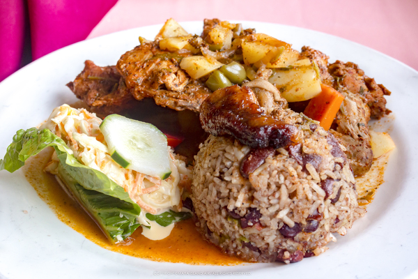

Rice and Beans Belizean Style

Rice and Beans is one of Belize's most famous dishes. The traditional Belizean recipe
is super delicious and easy to make. It is typically served with stewed chicken,
fried plantains, and coleslaw.
Ingredients:
- 1 pound dry kidney beans
- 1 1/2 quarts water, or as needed
- 3 cloves garlic, minced
- 1/2 medium red bell pepper, chopped
- 1/2 medium onion, chopped
- 1 teaspoon vegetable oil
- 1/2 teaspoon salt
- 1/4 teaspoon ground black pepper
- 1 cup white rice
- 3/4 cups coconut milk
- 3/4 cup water
Steps:
- Place kidney beans into a large container and cover with several inches of cool
water; let it soak for 8 hours overnight.
- Drain and transfer the beans to a stockpot. Add 1 1/2 quarts water (or as needed)
and bring to a boil over high heat. Add garlic, reduce heat to medium-low, cover, and simmer
until beans are tender, about 1 hour. Remove from the heat and stir in onion, bell pepper
oil, salt, and pepper.
-
Cook and stir rice in a large saucepan over low heat until toasted and fragrant,
about 3 minutes. Add coconut milk, 3/4 cup water, and kidney beans; bring to a boil.
Reduce the heat to low, cover, and cook until rice is tender, 30 to 40 minutes.
Recipe Source
Home